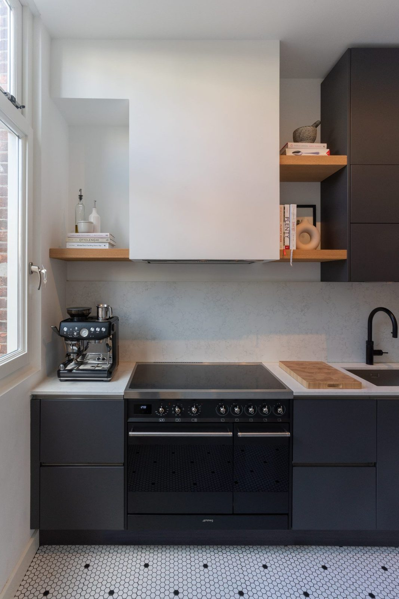
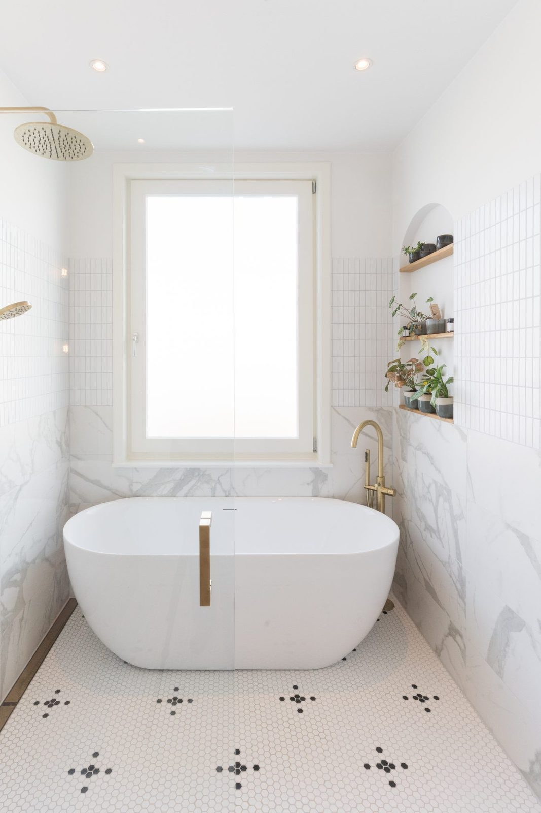
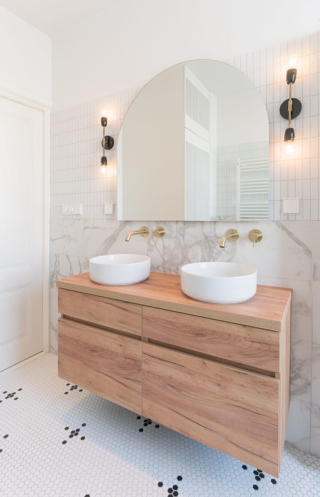
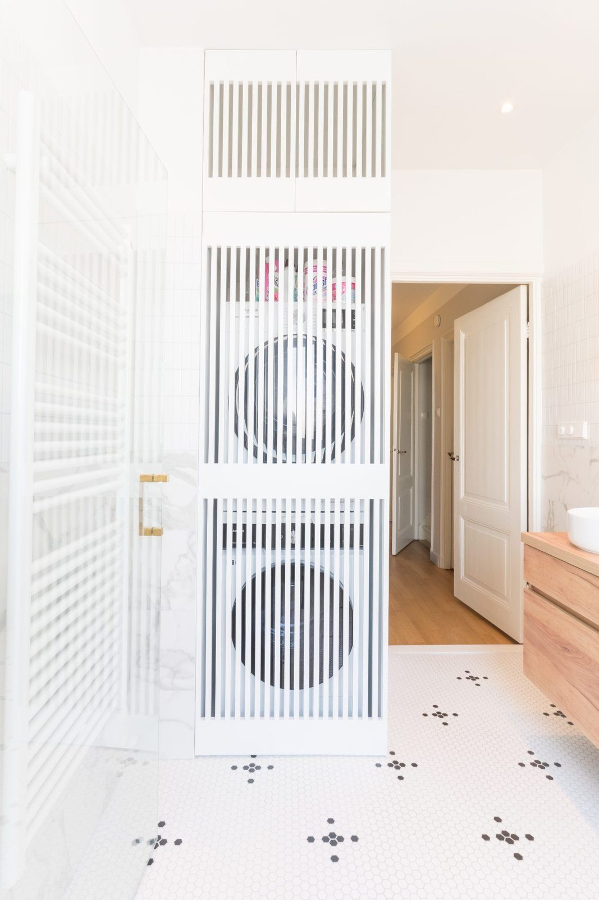
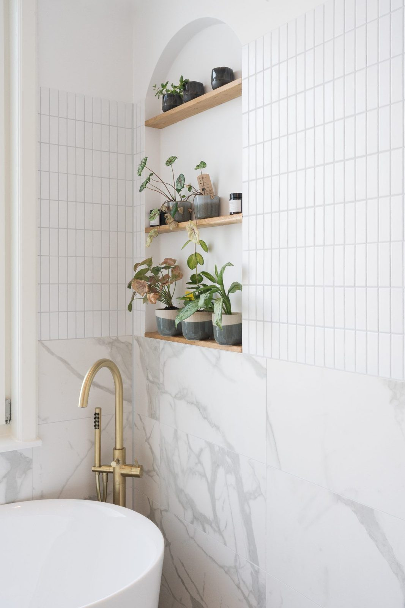

Residential Interior Design · The Hague


When the family moved into their new home, there was no kitchen in place. The brief was to design a kitchen that was both highly functional and visually connected to the surrounding living spaces.
Although the available space was limited, the kitchen needed to offer generous storage and accommodate the family’s everyday needs, while feeling light, open and harmonious with the adjoining living room and garden room.
The bathroom was also part of the renovation. The family wished to incorporate both a shower and a bathtub, as well as a dedicated shelf for plants, while keeping the laundry facilities within the same space.
For the kitchen, I opted for a calm and understated colour palette to create a light and airy feel that would sit naturally within the rest of the home. The cabinetry was extended all the way to the ceiling, drawing the eye upwards, enhancing the sense of height and making the most of every available centimetre for storage.
In the bathroom, the layout was carefully reconfigured to accommodate all the family’s wishes without compromising on space or atmosphere. I designed bespoke laundry cabinetry with angled doors, allowing the washing machine and dryer to function comfortably while keeping them discreetly integrated into the overall design.
A custom glass door separates the shower and bath area from the vanity, creating a practical wet zone while maintaining a sense of openness. A dedicated shelf for plants adds a natural touch, reinforcing the relaxed, spa-inspired atmosphere.



The material palette was chosen to create a fresh, calm and timeless atmosphere throughout the home.
Oak brings warmth and natural texture, while mosaic tiles add subtle detail and character. Marble-look tiles introduce a refined, elegant touch, balancing the warmth of the wood with a crisp and understated finish.
Every material was selected with longevity in mind: quality, durability and timeless appeal rather than passing trends. Together, the natural tones, textures and carefully considered details create a harmonious interior that feels fresh, inviting and designed to stand the test of time.